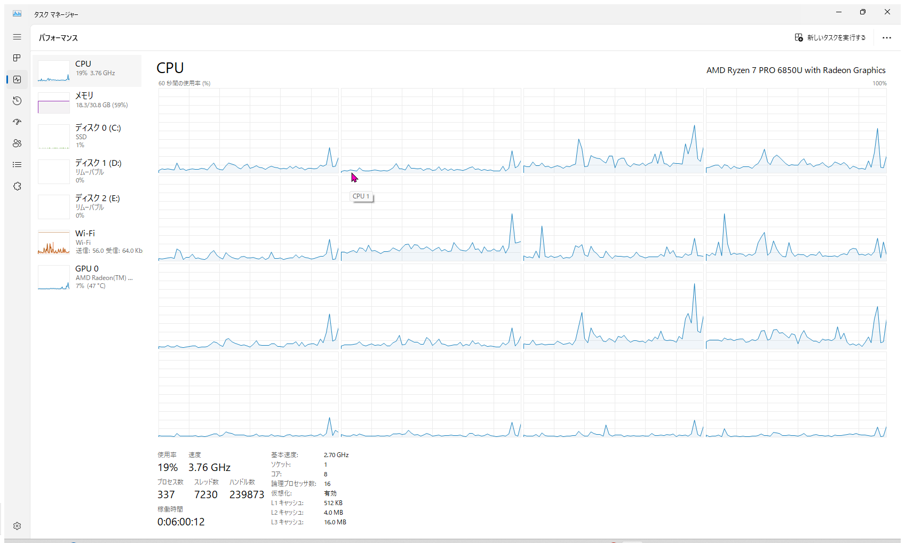
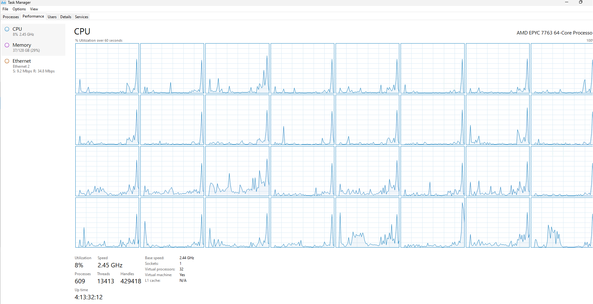
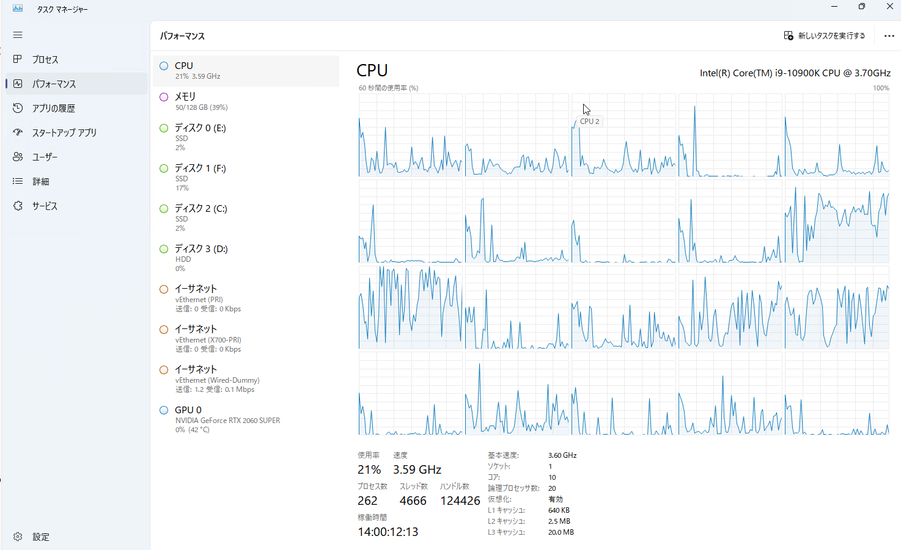
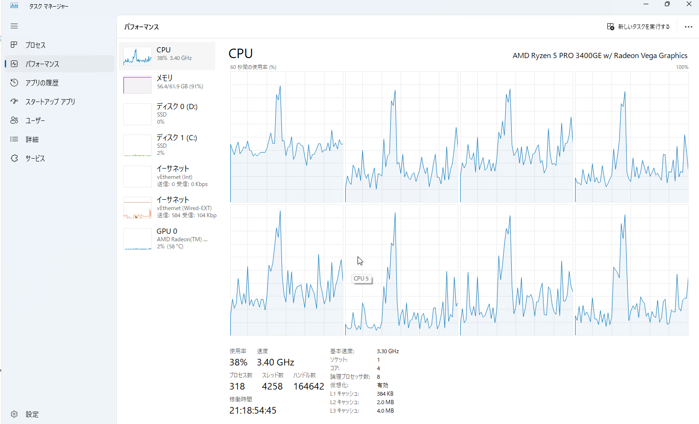

こんにちは。日本マイクロソフト Security & Compliance サポートチームの沢です。
私たちのチームでは、現在 CSS (Customer Service & Support) を盛り上げてくださるサポートエンジニアを募集しております。
本記事では、Security & Compliance サポートチームの業務内容やリモートワークでの働き方についてご案内させていただきます。
本記事の内容
業務内容について
Microsoft のクラウドサービスのサポートは、主にサービス料金内に含まれている無償サポートと別途追加のサポート契約が必要な有償サポートがあります。
わたしたちのチームでは主に有償サポート契約を締結されたお客様を中心にサービスを提供しています。
サービスリクエスト（SR）の受付からクローズまで基本的には担当するメンバーがオーナーシップを持って対応しており、基本的な案件対応の流れとしては、起票 → 調査方針合意 → 調査 → 回答 → クローズとなります。
SR の起票から終了までの期間につきましては内容にも依存しますので、一概に決まってはいないですが、大まかに下記のような感じだと認識いただければと思います。
- 利用方法に関するお問合せや一般的なトラブルシューティング：１～１０日程度
- 類似事例のないトラブルシューティング：３～２０日程度
※ 製品不具合の改修が必要な場合も稀にありますので、そのような場合はクローズまで数ヶ月かかる時もあります。
なお、時期によって増減はありますが、各エンジニアでは平均 10 ~ 20 件ほどのアクティブな SR を受け持ち、同時並行で案件対応を進める場合が多いです。
アクティブな SR の中にはお客様確認待ちステータスの SR も多く含まれますので、常に 10 数件の調査を並行して行うわけではございません。
一日の業務の流れについて
わたしのリモートワークでの 1 日の流れについて紹介いたします！
- 09:00 Teams にて業務開始連絡。
- 09:00 SR 管理ツールにて担当 SR の対応状況整理及びタスクの洗い出しを実施。
- 09:30 新規担当 SR の対応開始。回答可能な内容であれば電話 or メールにて回答実施し、調査が必要な内容が含まれる場合は、次回連絡日程を沿えた上、受付連絡を実施。
- 10:30 既存担当 SR の調査を実施。（公開情報調査及び実機動作検証など）
- 11:00 SR 相談会に参加。（チームメンバー間の情報交換及び調査方法に関する相談などを目的とした、出入り自由な相談会）
- 12:00 お昼休憩。（SR 対応状況に応じて柔軟に取得時間を変更しています）
- 13:00 社内ミーティング参加。（社内別製品担当との協業調査など）
- 13:30 既存担当 SR の調査を実施。（公開情報調査及び実機動作検証など）
- 15:30 お客様からの電話に応対。（割合としては低いですが、メールでの案内内容に不明点がある場合や、急ぎ事情がある場合はお電話での対応もあります）
- 16:00 チームミーティング。（チームリーダからの重要事項周知やメンバーからの各種情報共有及び報告を目的としたミーティング）
- 17:00 通院のため、少し早めに業務を中断。
- 17:30 （サポート窓口が閉まります）
- 18:00 帰宅後、業務再開。（翌日分のタスク整理や実機動作検証など）
- 19:00 Teams にて業務終了連絡。
業務環境について
勤務形態について
わたしたちのチームでは主にリモートワーク中心で業務を行っています。
また、チームのメンバー内で話し合いをもって、必須ではありませんが毎週水曜日を推奨出社日とし、オフィスで席をならべて仕事をしている仲間も多いです。
コミュニケーション手段について
社内のコミュニケーションはほぼすべて Teams を利用して行います。
お客様とのコミュニケーション時はお客様にてご用意いただいた電話会議ツールや、電話を利用して行います。
社用携帯用の SIM が別途支給されていて、スマートフォンを利用した業務リソース（メール、Teams）へのアクセスも可能です。
業務用デバイスや検証環境のスペックについて
業務にて利用しているデバイスや検証環境のスペックについても簡単に紹介いたします！
- 業務用デバイス１（Ryzen7 PRO 6850U / 32GB / 1TB）
- 通常業務にて利用します。

- 業務用デバイス２（Azure Virtual Desktop）
- 業務用デバイス１が利用できない場合などに、主に利用します。

- 検証環境１（サポート部門共用 Azure Subscriptions）
- 主に業務関連検証にて利用します。
- 検証環境２（個人に紐づく Azure Subscriptions）
- 最大１０台までの VM が作成可能で、主に業務関連検証にて利用します。
- 検証環境３（社員特典の Visual Studio Subscriptions 及び Subscriptions 付随 Azure Subscriptions 無償枠）
- 業務以外の用途でも利用可能もので、担当外製品の検証や趣味のFPS ゲームサーバをホスティングする用途などで利用しています。
- チーム共用検証環境
- macOS デバイス及び Android / iOS デバイスが複数台ずつチーム共用デバイスとして用意されており、デバイス依存事象の調査の際に利用可能です。
- 個人検証機１（Core i9-10900K / 128GB / 5TB）

- 個人検証機２（Ryzen 5 PRO 3400GE / 64GB / 3TB）

関連記事
Security & Compliance チームの紹介記事は第 1 弾から第 5 弾まで公開しています。
以下のリンクから、その他の記事も是非一緒にご覧ください！
<第 1 弾> Security & Compliance サポートチームについて
<第 5 弾> Security & Compliance チームの多様性について
※本情報の内容（添付文書、リンク先などを含む）は、作成日時点でのものであり、予告なく変更される場合があります。